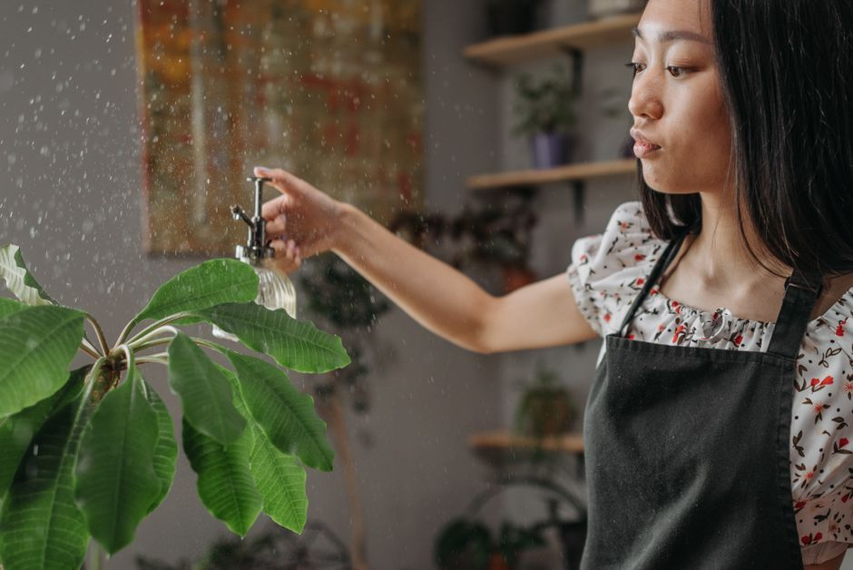

How to Properly Water Indoor Plants Without Overwatering

Photo: ROCKETMANN TEAM / Pexels
Watering indoor plants can be a delicate balance. Too much water can lead to root rot and plant death, while too little can cause wilting and poor growth. Here are seven practical tips to help you water your indoor plants effectively and avoid overwatering.
Understand Your Plant's Needs
Photo: David Correa Franco / Pexels
Before you start, know your plant. Different plants have different watering requirements. For instance, a cactus needs very little water, while a fern thrives in a more humid environment. A general rule is to check the soil moisture level by sticking your finger about an inch into the soil. If it feels dry, it's time to water.
Use the Right Water
Always use room temperature water. Cold water can shock your plant and cause it to close its stomata, making it harder for the plant to breathe. For the most precise control, aim for water that is between 65°F and 75°F (18°C to 24°C).
Choose the Right Method
Using a watering can with a narrow spout is ideal for precision watering. Aim to water the soil directly, avoiding the leaves as much as possible to prevent fungal diseases. For larger plants, a hose with a spray nozzle can be useful, but ensure you don’t over-saturate the soil.
Be Consistent, But Flexible
Water your plants once a week, or every 7-10 days, depending on the species and the season. During the summer, they may need watering more frequently, but in winter, once every two weeks might be sufficient. Remember, overwatering is more common in winter due to slower evaporation.
Don’t Overwater
Overwatering is a common mistake, especially in humid environments. Ensure the pot has adequate drainage holes. If you notice standing water in the saucer after watering, remove it immediately. Too much moisture can lead to root rot, which is often fatal.
Monitor the Soil
Check the soil moisture regularly. Stick your finger into the soil to see how dry it is. The top inch should be dry, but the lower part should still feel moist. Adjust your watering schedule accordingly.
Use a Container with Good Drainage
Ensure your pots have proper drainage. Place a layer of small stones or gravel at the bottom of the pot to help with drainage. This prevents water from pooling at the base, which can lead to root rot.
Example Scenario
Imagine you have a succulent in a small pot. The soil is well-draining, and the pot has multiple drainage holes. Check the soil every few days; it should be dry to the touch. Water the plant deeply but infrequently—about once a month. This ensures the roots receive adequate water while avoiding overwatering.
By following these seven steps, you can ensure your indoor plants thrive without drowning them in water. Remember, the key is consistency and adaptability. Each plant is unique, and understanding its specific needs will lead to healthier, happier plants.
By staying informed and attentive, you can enjoy the beauty of indoor plants without the stress of overwatering. Happy gardening!
Recommended products
As an Amazon Associate, I earn from qualifying purchases.